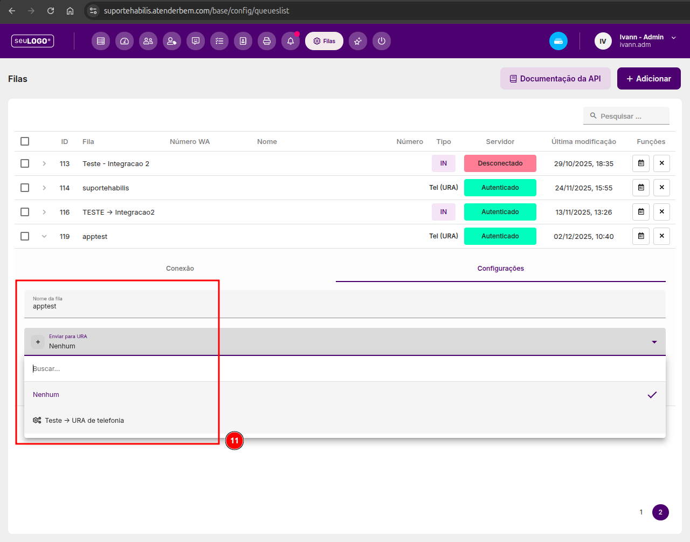

Custom Destinations e Integração ARI Bridge com AtenderBem
Como conectar o motor de telefonia do Asterisk à inteligência de URA Avançada e fluxos de atendimento do AtenderBem via ARI (Asterisk REST Interface).

1. O que é o ARI Bridge?
O ARI (Asterisk REST Interface) é uma API moderna do Asterisk que permite que aplicações externas controlem canais de voz em tempo real. Através do destino especial ari-bridge, o PABX Fácil transfere a chamada recebida para a URA Visual Avançada do sistema AtenderBem, permitindo fluxos com inteligência artificial, integração de banco de dados e roteamento dinâmico.
2. Passo 1: Criando o Custom Destination no FreePBX
- No menu superior do PABX, acesse
Admin › Custom Destinations. - Clique no botão + Add Destination.
-
Preencha os campos com os parâmetros exatos:
- Target:
ari-bridge,NOME_FILA,1(Exemplo:ari-bridge,apptest,1). Importante: O nomeapptestserá o identificador da fila no sistema web. - Description:
Ponte ARI - URA Telefonia AtenderBem. - Notes:
Encaminha chamada de voz para o fluxo de URA do sistema omnichannel. - Return: Selecione
No.
- Target:
- Clique em Submit e em Apply Config.
3. Passo 2: Criando a Fila no AtenderBem
- No painel do AtenderBem, acesse
Configurações › Filas › + Adicionar. -
No campo Nome da Fila, digite RIGOROSAMENTE O MESMO NOME informado no target do PABX (no exemplo:
apptest). - No campo Tipo da Fila, selecione a opção Telefonia (URA).
- Na seção de configurações da fila, na opção Enviar para a URA, selecione a URA do tipo "URA Avançada (telefonia)" que você deseja que atenda as chamadas.
- Clique em Salvar.
Vínculo Estabelecido: A partir deste momento, qualquer rota de entrada no PABX que tiver como destino este Custom Destination entregará a chamada diretamente para o fluxo de URA inteligente do AtenderBem.